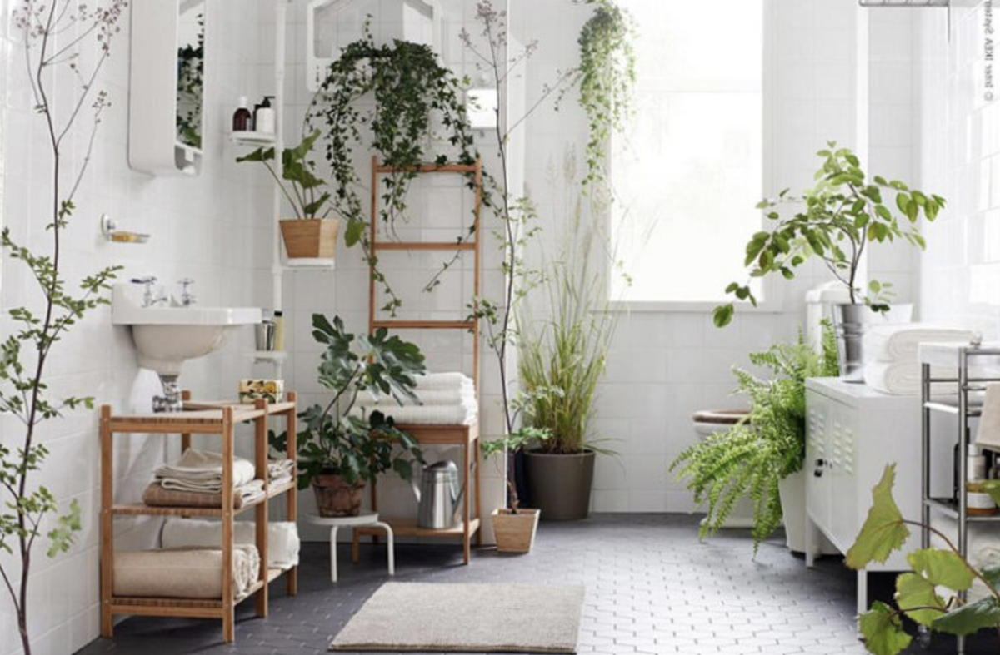
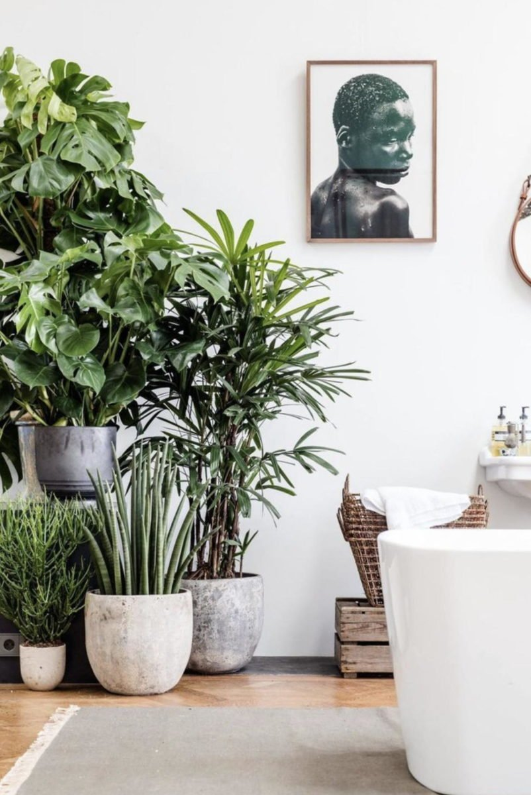
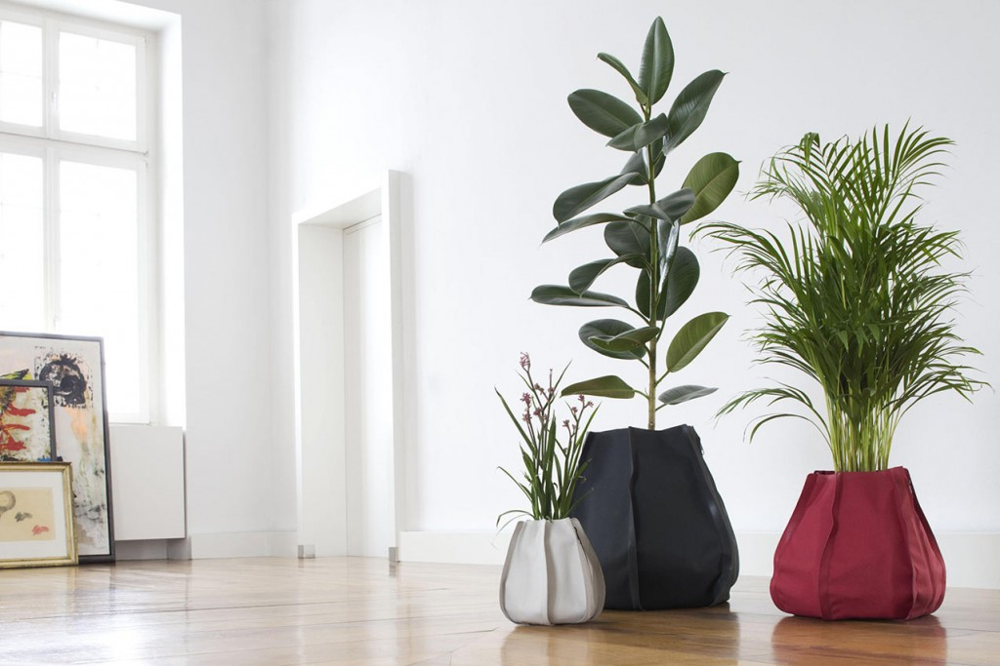

<html>
    <!DOCTYPE html>
</html>
<head>
    <meta http-equiv="X-UA-Compatible" content="IE=edge"/>
    <meta charset="uft-8"/>
    <meta name="viewport" content="width=device width, initial scale=1.0, maximux scale 1.0, user-scalable=no"/>

    <meta name="author" content="Eugenia Pestelli"/>
    <meta name="description" content="questa è una pagina sulle piante d'appartamento"/>
    <meta property="og:image" content="chalatea.jpg"/>
    <meta property="og:description" content="Questa è una pagina sulle piante d'appartamento"/>
    <meta property="og:url" content="file:///C:/Users/eupes/Secondapagina/Homepage.html"/>
    <meta property="og:title" content="Piante d'appartamento"/>
    <link rel="icon" href="icons8-puzzle-16.ico" type="image/x-icon">
    <title>Piante d'appartamento</title>
    <header>
        <nav>
            <ul><a href="./homepage.html">Homepage</a>
                 <li><a href="pages/piante da appartamento.html">Piante da appartamento</a></li>
                 <li><a href="pages/newsletter.html">Newsletter</a></span></li>
            <li><a href="pages/piante da esterno.html">Piante da esterno</a></li>
            </ul>
            <a name="inizio"></a>

       </nav>
    </header>
    <hr>
    <body>
 
 <div>
   <main>
       <!--Section arredare casa con piante-->
       <section>
    <center><h1>Arredare con le piante</h1>
       <figure>
       
     <figcaption>Piante da appartamento</figcaption>
     </figure>
               
     <p><strong>Arredare con le piante</strong> è facile. Le idee di styling mescolando le varie tipologie botaniche non mancano: basta farlo seguendo alcuni schemi compositivi e, soprattutto, osservando il tipo di esposizione che caratterizza la nostra abitazione, vale a dire se negli ambienti entra molta luce oppure no.

        Chi possiede un appartamento assolato potrà optare per qualsiasi tipo di scelta, nel caso opposto sarà indispensabile informarsi sulle piante che vivono con poca luce, altrettanto belle di quelle amanti del sole e con una straordinaria capacità di vivere senza grandi cure, come la Sansevieria e il Pothos.</p>
</center> <br>
</div>

<div>
    
       <center>
           <h2>Come disporre le piante in appartamento</h2>
       <figure>
      
       
      <figcaption>Disporre le piante in appartamento</figcaption>
  
     </figure>
       <p>In molte città, si sa, lo spazio esterno e i giardini sono davvero limitati. Non c’è da meravigliarsi quindi se sempre più gente tende a circondarsi di meravigliose piante da interno per aggiungere vegetazione e naturalità ai propri spazi.
<cite>Una cosa è certa: le piante da appartamento fanno bene alla salute, rilasciano ossigeno in casa, controllano l’umidità e purificano l’aria.

</cite> <br>
Un giardino interno può essere il tuo rifugio dal mondo fuori e per molte persone è fonte di grande gioia. <br>

Che tu viva in ​​un piccolo appartamento o in una grande casa di campagna, se introduci piante in casa inizierai a notare miglioramenti nella tua salute e nell’umore generale.
      </p>
  </center>
</div>

 <div>
      <center><h2>La giusta posizione</h2>
       <p>È importante studiare preliminarmente la collocazione delle piante in casa: non devi sovraffollare gli spazi perché ogni specie ha bisogno del suo habitat per crescere, ma allo stesso tempo non devi farle sembrare troppo rade o casuali.
<br>
         Le piante tendono a prosperare quando sono insieme, quindi il mio consiglio è di creare una micro area vegetale composta da vasi e piante di diverse dimensioni e forme. Assicurati però che le piante che scegli siano adatte per quel determinato spazio!
                <br>
        Un modo fondamentale per inserire diverse piante insieme è cercare forme e trame diverse che si completino a vicenda; per esempio, non mettere insieme piante da fiore di diverso tipo, a meno che tu non abbia intenzione di un effetto arcobaleno. È bello scegliere dei toni blu-grigio e dei colori che lavorino armoniosamente insieme.
                <br>
          Se vuoi intraprendere l’impegno di inserire delle piante da appartamento nei tuoi interni, esamina prima ciascuna delle tue stanze.
       </p>
       <figure>
           
        <a href="https://www.corsoarredo.it/arredare-con-le-piante-3-consigli-di-design" target="_blank">
            
        </a>
      

           </figcaption>
       </figure>
      </center> 
<br>
</div>
</main>
</section>

<!--Sezione scegli la tua preferita-->
<section>
    <main>
        <h1>Quindi rispondi alle seguenti domande</h1>
        <ol>
            <strong><li>Quanto spazio ho?</li></strong>
            <strong><li>Voglio creare uno stile jungle o qualcosa di più minimal?
            </li></strong>
            <strong><li>Quanta luce ho?</li></strong>
        </ol>
        <br>
        <p> <a href="pages/piante da appartamento.html"> Clicca qui per sapere quali sono le migliori piante d'appartamento</a>
        </p>
    </main>
</section>

<a href="#inizio">Torna all'inizio della pagina</a>

    </body>
<br>
<footer>
    <small>Tutti i contenuti sono prottetti dalla licenza creative commons</small>

</footer>
